data("banco.misto", package = 'minicursoTRI2025')4 Análise com itens dicotômicos e politômicos
4.1 Preparação
Importar banco
Nome das variáveis do banco
names(banco.misto) [1] "IME_2801" "IME_6196" "IME_6042" "IME_2416" "IME_5228" "IME_2228"
[7] "IME_2647" "IME_1742" "IME_1437" "IME_5369" "IME_6881" "IME_6411"
[13] "IME_9707" "IME_2376" "IME_2405" "IME_3939" "IME_1554" "IME_4568"
[19] "IME_2727" "IME_4274" "IME_3586" "IME_6972" "IME_9082" "IME_9631"
[25] "IME_6436" "IME_5479" "IME_6958" "IME_2786" "IME_8580" "IME_7417"
[31] "IME_9843" "IME_4882" "IME_4071" "IME_4005" "IME_9948" "IME_7131"
[37] "IME_9079" "IME_8825" "IME_5113" "IME_5104" "IME_8184" "IME_2565"
[43] "IME_6445" "IME_3341" "IME_8694" "IME_1433" "IME_3127" "IME_8340"
[49] "IME_9914" "IME_6379" "IRC_7671" "IRC_5373" "IRC_6255" "IRC_9192"
[55] "IRC_8276" "IRC_7024" "IRC_3451" "IRC_4181" "IRC_7970" "IRC_2335"São 60 itens, sendo 50 Itens de Múltipla Escolha (IME) e 10 Itens de Resposta Construída (IRC).
4.2 Calibração
4.2.1 Calibração inicial (V0)
Gerar a tabela inicial de parâmetros
tab.pars <- mirt(data = banco.misto, model = 1, itemtype = c(rep('3PL', 50), rep('graded', 10)), TOL = 0.001, pars = 'values')Configurar as prioris, considerando que os IMEs possuem cinco categorias de resposta.
tab.pars[tab.pars$name == 'a1', 'value'] <- 1.7
tab.pars[tab.pars$name == 'a1', 'prior_1'] <- 0.53062825106217
tab.pars[tab.pars$name == 'a1', 'prior_2'] <- 0.5
tab.pars[tab.pars$name == 'a1', 'prior.type'] <- 'lnorm'
tab.pars[tab.pars$name == 'a1', 'lbound'] <- 0
tab.pars[tab.pars$name == 'a1', 'ubound'] <- Inf
tab.pars[tab.pars$name == 'g', 'value'] <- .2
tab.pars[tab.pars$name == 'g', 'prior_1'] <- 5
tab.pars[tab.pars$name == 'g', 'prior_2'] <- 17
tab.pars[tab.pars$name == 'g', 'prior.type'] <- 'expbeta'
tab.pars[tab.pars$name == 'g', 'lbound'] <- 0
tab.pars[tab.pars$name == 'g', 'ubound'] <- 1Calibrar os itens
fit <- mirt(data = banco.misto, model = 1, itemtype = c(rep('3PL', 50), rep('graded', 10)), TOL = 0.001, pars = tab.pars)4.2.1.1 Gráficos
Curva de informação do teste
plot(fit, type = 'info')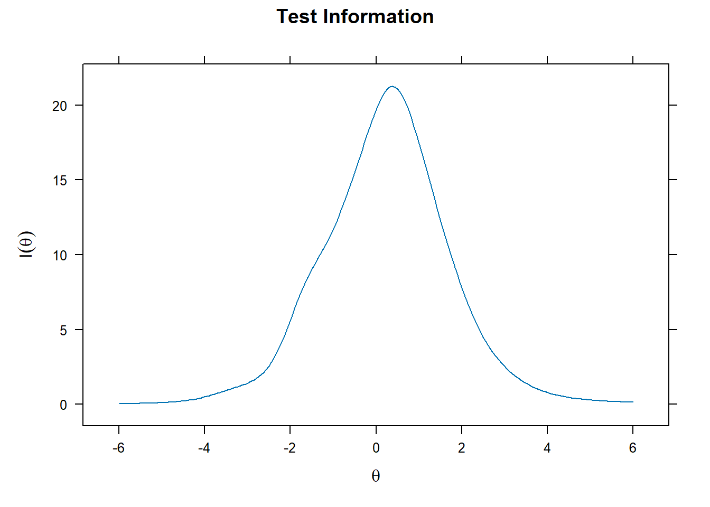
Confiabilidade do teste em função do escore
plot(fit, type = 'rxx')
Erro padrão de medida em função do escore
plot(fit, type = 'SE')
Informação do teste e erro padrão
plot(fit, type = 'infoSE')
Curva de informação de cada item
plot(fit, type = 'infotrace')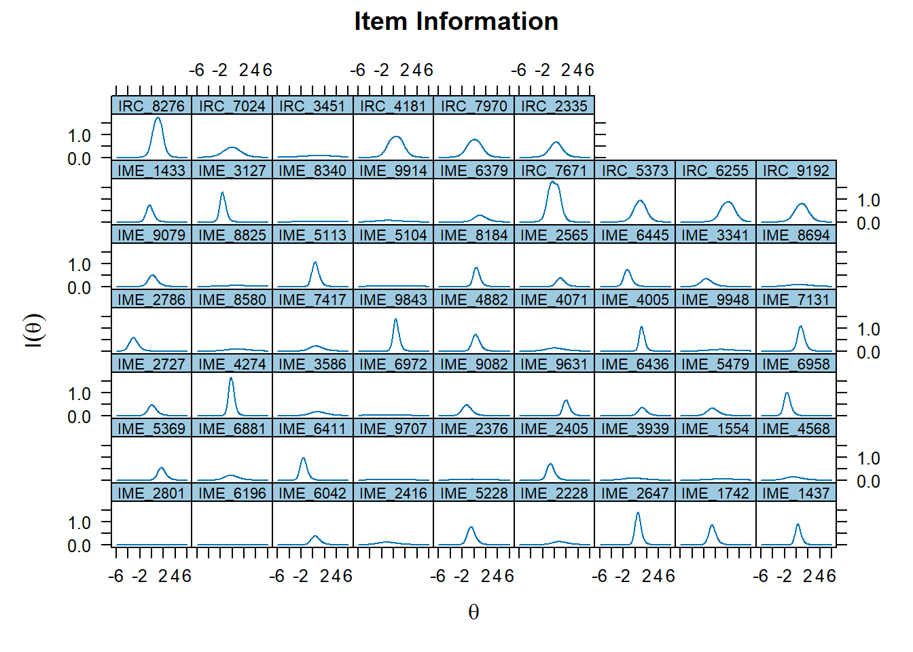
Curva característica de cada item
plot(fit, type = 'trace')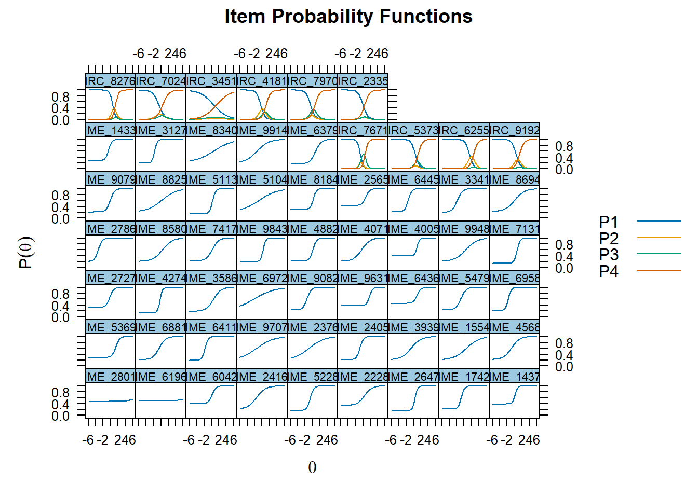
Gráficos de cada item
itemplot(fit, 1, 'info')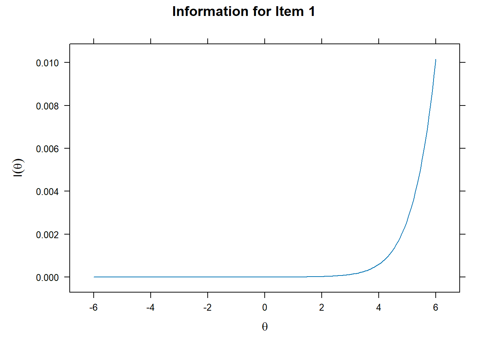
itemplot(fit, 1, 'SE')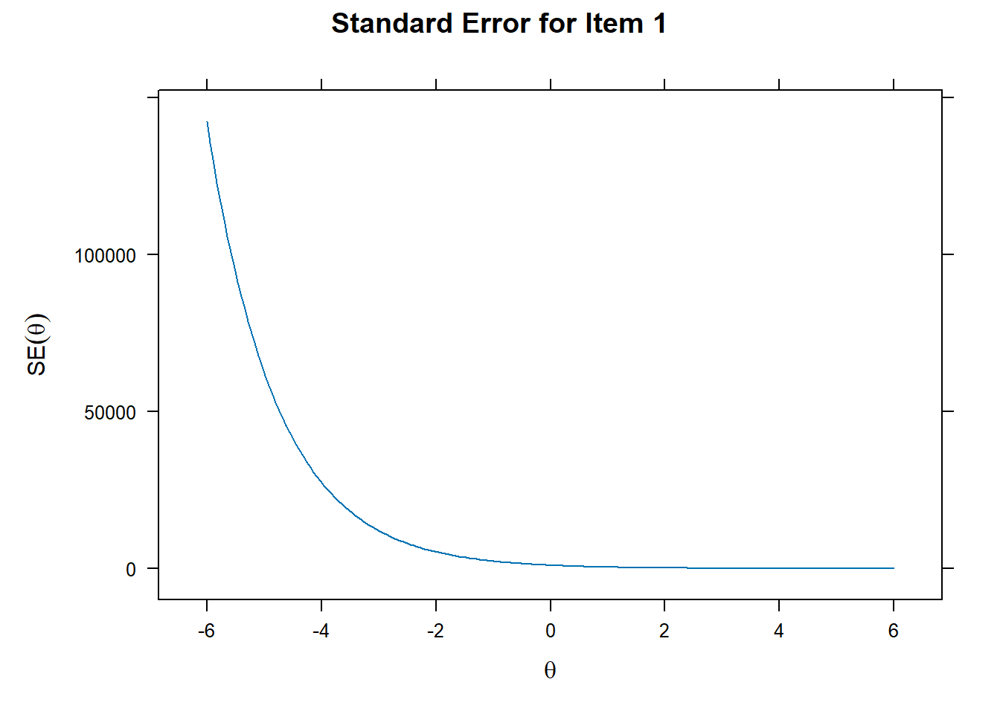
itemplot(fit, 1, 'trace')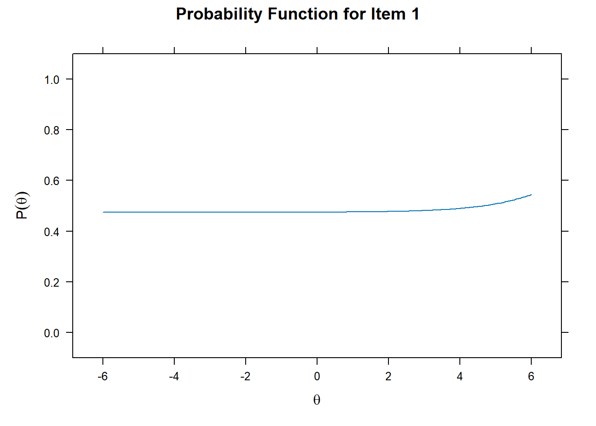
itemplot(fit, 1, 'infoSE')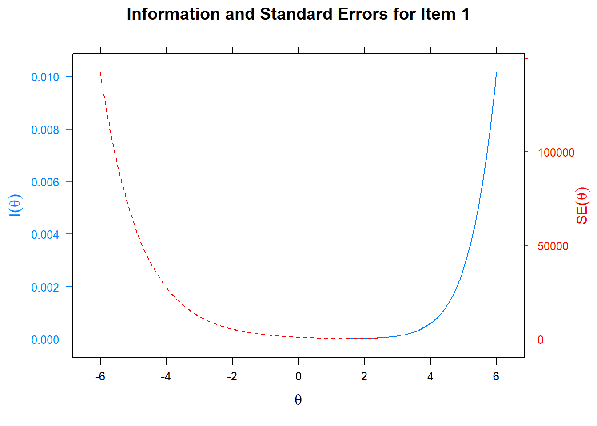
itemplot(fit, 1, 'infotrace')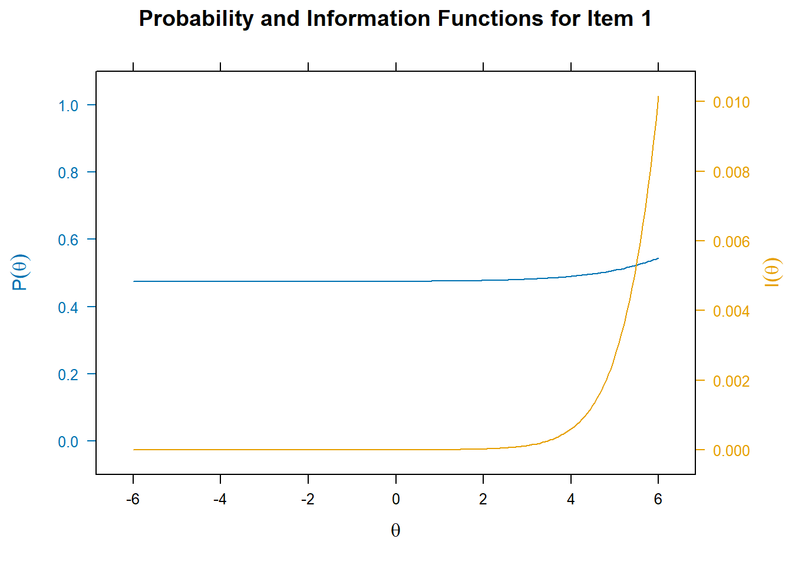
4.2.2 Análise dos parâmetros dos itens (V1)
coef(fit, IRTpars = TRUE, simplify = TRUE)$items
a b g u b1 b2 b3
IME_2801 0.821 8.269 0.474 1 NA NA NA
IME_6196 0.884 8.415 0.495 1 NA NA NA
IME_6042 1.832 0.139 0.389 1 NA NA NA
IME_2416 0.815 -1.490 0.209 1 NA NA NA
IME_5228 2.063 -0.615 0.163 1 NA NA NA
IME_2228 1.022 0.389 0.336 1 NA NA NA
IME_2647 2.762 0.396 0.157 1 NA NA NA
IME_1742 2.283 -0.732 0.214 1 NA NA NA
IME_1437 2.776 0.145 0.386 1 NA NA NA
IME_5369 1.948 1.442 0.288 1 NA NA NA
IME_6881 1.142 -0.543 0.214 1 NA NA NA
IME_6411 2.382 -1.732 0.198 1 NA NA NA
IME_9707 0.450 -1.428 0.207 1 NA NA NA
IME_2376 0.497 -0.984 0.206 1 NA NA NA
IME_2405 2.091 -0.845 0.219 1 NA NA NA
IME_3939 0.739 -0.686 0.210 1 NA NA NA
IME_1554 0.571 0.611 0.203 1 NA NA NA
IME_4568 0.935 -0.849 0.220 1 NA NA NA
IME_2727 1.849 -0.195 0.316 1 NA NA NA
IME_4274 2.935 -0.260 0.133 1 NA NA NA
IME_3586 0.974 0.526 0.181 1 NA NA NA
IME_6972 0.365 -2.183 0.205 1 NA NA NA
IME_9082 1.717 -1.467 0.230 1 NA NA NA
IME_9631 2.408 1.768 0.381 1 NA NA NA
IME_6436 1.878 0.926 0.453 1 NA NA NA
IME_5479 1.438 -0.817 0.235 1 NA NA NA
IME_6958 2.444 -1.670 0.210 1 NA NA NA
IME_2786 1.857 -3.294 0.201 1 NA NA NA
IME_8580 0.748 0.414 0.201 1 NA NA NA
IME_7417 1.165 0.230 0.220 1 NA NA NA
IME_9843 2.853 0.316 0.196 1 NA NA NA
IME_4882 2.095 0.135 0.221 1 NA NA NA
IME_4071 0.892 -0.368 0.207 1 NA NA NA
IME_4005 3.052 0.978 0.392 1 NA NA NA
IME_9948 0.642 0.456 0.199 1 NA NA NA
IME_7131 2.382 0.694 0.139 1 NA NA NA
IME_9079 1.718 -0.064 0.207 1 NA NA NA
IME_8825 0.508 0.130 0.206 1 NA NA NA
IME_5113 2.384 0.297 0.148 1 NA NA NA
IME_5104 0.420 -0.805 0.206 1 NA NA NA
IME_8184 2.439 0.236 0.301 1 NA NA NA
IME_2565 1.886 0.711 0.428 1 NA NA NA
IME_6445 2.106 -1.464 0.214 1 NA NA NA
IME_3341 1.405 -1.831 0.194 1 NA NA NA
IME_8694 0.744 0.043 0.217 1 NA NA NA
IME_1433 2.252 -0.532 0.279 1 NA NA NA
IME_3127 2.725 -1.746 0.191 1 NA NA NA
IME_8340 0.397 0.595 0.210 1 NA NA NA
IME_9914 0.640 -1.349 0.202 1 NA NA NA
IME_6379 1.276 0.787 0.170 1 NA NA NA
IRC_7671 2.418 NA NA NA -0.702 -0.347 0.579
IRC_5373 1.759 NA NA NA 0.478 0.691 1.257
IRC_6255 1.715 NA NA NA 1.480 2.507 2.625
IRC_9192 1.631 NA NA NA 0.452 1.253 1.376
IRC_8276 2.401 NA NA NA 0.618 1.299 1.405
IRC_7024 1.205 NA NA NA -0.581 0.031 0.449
IRC_3451 0.549 NA NA NA 0.616 0.832 1.392
IRC_4181 1.710 NA NA NA -0.342 0.534 1.151
IRC_7970 1.584 NA NA NA -0.519 -0.162 0.696
IRC_2335 1.535 NA NA NA 0.021 0.240 0.464
$means
F1
0
$cov
F1
F1 1Armazenar os parâmetros em um objeto
pars <- data.frame(coef(fit, IRTpars = TRUE, simplify = TRUE)$items)
pars a b g u b1 b2 b3
IME_2801 0.8214861 8.26863160 0.4743639 1 NA NA NA
IME_6196 0.8843730 8.41453017 0.4951761 1 NA NA NA
IME_6042 1.8321034 0.13885317 0.3886310 1 NA NA NA
IME_2416 0.8148057 -1.48997303 0.2087524 1 NA NA NA
IME_5228 2.0627680 -0.61537353 0.1634006 1 NA NA NA
IME_2228 1.0216307 0.38915584 0.3356793 1 NA NA NA
IME_2647 2.7620356 0.39600393 0.1573480 1 NA NA NA
IME_1742 2.2830868 -0.73160041 0.2137884 1 NA NA NA
IME_1437 2.7757475 0.14514874 0.3860544 1 NA NA NA
IME_5369 1.9483597 1.44182870 0.2882603 1 NA NA NA
IME_6881 1.1420625 -0.54343336 0.2140259 1 NA NA NA
IME_6411 2.3819573 -1.73188067 0.1976757 1 NA NA NA
IME_9707 0.4501269 -1.42780357 0.2071887 1 NA NA NA
IME_2376 0.4972324 -0.98394349 0.2056159 1 NA NA NA
IME_2405 2.0912046 -0.84487028 0.2185630 1 NA NA NA
IME_3939 0.7385297 -0.68621960 0.2096965 1 NA NA NA
IME_1554 0.5705617 0.61140629 0.2030365 1 NA NA NA
IME_4568 0.9345845 -0.84928308 0.2199736 1 NA NA NA
IME_2727 1.8488554 -0.19460646 0.3157450 1 NA NA NA
IME_4274 2.9354136 -0.25973021 0.1334435 1 NA NA NA
IME_3586 0.9743280 0.52601948 0.1813060 1 NA NA NA
IME_6972 0.3647119 -2.18293233 0.2046337 1 NA NA NA
IME_9082 1.7170362 -1.46738564 0.2300227 1 NA NA NA
IME_9631 2.4075921 1.76792553 0.3811913 1 NA NA NA
IME_6436 1.8781443 0.92588962 0.4526950 1 NA NA NA
IME_5479 1.4375738 -0.81698213 0.2354140 1 NA NA NA
IME_6958 2.4435127 -1.66998524 0.2097429 1 NA NA NA
IME_2786 1.8566884 -3.29392956 0.2009260 1 NA NA NA
IME_8580 0.7475192 0.41421788 0.2012675 1 NA NA NA
IME_7417 1.1648071 0.23035366 0.2200278 1 NA NA NA
IME_9843 2.8525495 0.31552448 0.1956518 1 NA NA NA
IME_4882 2.0954711 0.13494350 0.2205939 1 NA NA NA
IME_4071 0.8920520 -0.36769998 0.2067612 1 NA NA NA
IME_4005 3.0522290 0.97831197 0.3924516 1 NA NA NA
IME_9948 0.6420989 0.45578776 0.1987911 1 NA NA NA
IME_7131 2.3817427 0.69407013 0.1387845 1 NA NA NA
IME_9079 1.7175213 -0.06405283 0.2074173 1 NA NA NA
IME_8825 0.5076108 0.13010965 0.2060407 1 NA NA NA
IME_5113 2.3842964 0.29671837 0.1484577 1 NA NA NA
IME_5104 0.4195258 -0.80481156 0.2064628 1 NA NA NA
IME_8184 2.4393898 0.23584794 0.3005951 1 NA NA NA
IME_2565 1.8855861 0.71114927 0.4281523 1 NA NA NA
IME_6445 2.1062798 -1.46350777 0.2141084 1 NA NA NA
IME_3341 1.4046056 -1.83105754 0.1941398 1 NA NA NA
IME_8694 0.7441664 0.04297872 0.2171891 1 NA NA NA
IME_1433 2.2520273 -0.53180988 0.2791873 1 NA NA NA
IME_3127 2.7253034 -1.74615464 0.1905756 1 NA NA NA
IME_8340 0.3974301 0.59495417 0.2102924 1 NA NA NA
IME_9914 0.6396716 -1.34885407 0.2024773 1 NA NA NA
IME_6379 1.2758918 0.78678584 0.1696855 1 NA NA NA
IRC_7671 2.4181988 NA NA NA -0.70216646 -0.34652048 0.5792236
IRC_5373 1.7588085 NA NA NA 0.47769885 0.69118766 1.2565150
IRC_6255 1.7145591 NA NA NA 1.47962312 2.50736529 2.6252775
IRC_9192 1.6314484 NA NA NA 0.45183686 1.25345088 1.3759833
IRC_8276 2.4006990 NA NA NA 0.61827262 1.29925459 1.4046180
IRC_7024 1.2050078 NA NA NA -0.58149604 0.03060869 0.4491517
IRC_3451 0.5487694 NA NA NA 0.61597456 0.83179651 1.3922514
IRC_4181 1.7102233 NA NA NA -0.34162359 0.53355414 1.1507895
IRC_7970 1.5843772 NA NA NA -0.51927343 -0.16240811 0.6957930
IRC_2335 1.5351697 NA NA NA 0.02081102 0.23965506 0.4635621Identificar itens com problemas de parâmetro. Excluir os itens que atendam a pelo menos um dos seguintes critérios: 1. a < 0.5 2. a > 4.0 3. todos os parâmetros b fora do intervalo de –2.5 a 2.5 4. c > 0.45
prob.a <- rownames(pars)[pars$a < 0.5 | pars$a > 4.0]
prob.b <- rownames(pars)[(apply(pars[, c('b', 'b1', 'b2', 'b3')], 1, function (x) all(x < -2.5 | x > 2.5, na.rm = TRUE)))]
prob.c <- rownames(pars)[pars$g > 0.45]
problemas <- c(prob.a, prob.b, prob.c)
problemas [1] "IME_9707" "IME_2376" "IME_6972" "IME_5104" "IME_8340" "IME_2801"
[7] "IME_6196" "IME_2786" "IME_2801" "IME_6196" "IME_6436" NA
[13] NA NA NA NA NA NA
[19] NA NA NA Caso um item seja excluído, seu parâmetro “a” deve ser definido como 0 (zero) na tabela de parâmetros e a variável est deve ser definida como FALSE para todos os parâmetros correspondentes a esse item.
tab.pars2 <- tab.pars
tab.pars2[tab.pars2$item %in% problemas & tab.pars2$name == 'a1', 'value'] <- 0
tab.pars2[tab.pars2$item %in% problemas, 'est'] <- FALSE
fit2 <- mirt(data = banco.misto, model = 1, itemtype = c(rep('3PL', 50), rep('graded', 10)), TOL = 0.001, pars = tab.pars2)Avalie os parâmetros:
pars2 <- data.frame(mirt::coef(fit2, IRTpars = TRUE, simplify = TRUE)$items)
pars2 a1 d g u a b b1
IME_2801 0 -0.08705936 -1.3862944 999 NA NA NA
IME_6196 0 0.01642112 -1.3862944 999 NA NA NA
IME_6042 NA NA 0.3898351 1 1.8357726 0.14523126 NA
IME_2416 NA NA 0.2079892 1 0.8120496 -1.49651644 NA
IME_5228 NA NA 0.1629885 1 2.0620730 -0.61656516 NA
IME_2228 NA NA 0.3307214 1 1.0015728 0.37528844 NA
IME_2647 NA NA 0.1578956 1 2.7695688 0.39887517 NA
IME_1742 NA NA 0.2135571 1 2.2818597 -0.73366147 NA
IME_1437 NA NA 0.3853206 1 2.7777717 0.14533052 NA
IME_5369 NA NA 0.2879306 1 1.9556901 1.44135835 NA
IME_6881 NA NA 0.2147772 1 1.1379712 -0.54159154 NA
IME_6411 NA NA 0.1985062 1 2.3732613 -1.73875660 NA
IME_9707 0 1.13962536 -1.3862944 999 NA NA NA
IME_2376 0 0.97449484 -1.3862944 999 NA NA NA
IME_2405 NA NA 0.2149017 1 2.0836026 -0.85298296 NA
IME_3939 NA NA 0.2085620 1 0.7377252 -0.68970300 NA
IME_1554 NA NA 0.2020793 1 0.5701733 0.60770786 NA
IME_4568 NA NA 0.2181548 1 0.9311491 -0.85582039 NA
IME_2727 NA NA 0.3132875 1 1.8368749 -0.19989690 NA
IME_4274 NA NA 0.1339297 1 2.9157441 -0.26096813 NA
IME_3586 NA NA 0.1821338 1 0.9754538 0.53149218 NA
IME_6972 0 1.30503201 -1.3862944 999 NA NA NA
IME_9082 NA NA 0.2303390 1 1.7133289 -1.47104603 NA
IME_9631 NA NA 0.3796100 1 2.3348547 1.76824538 NA
IME_6436 0 0.44719421 -1.3862944 999 NA NA NA
IME_5479 NA NA 0.2341759 1 1.4364315 -0.81979832 NA
IME_6958 NA NA 0.2118136 1 2.4376677 -1.67444632 NA
IME_2786 0 4.70488926 -1.3862944 999 NA NA NA
IME_8580 NA NA 0.2034055 1 0.7513352 0.42452925 NA
IME_7417 NA NA 0.2207816 1 1.1645419 0.23554247 NA
IME_9843 NA NA 0.1957806 1 2.8439186 0.31776445 NA
IME_4882 NA NA 0.2224070 1 2.1035557 0.14102115 NA
IME_4071 NA NA 0.2075227 1 0.8894519 -0.36440094 NA
IME_4005 NA NA 0.3915577 1 3.0773381 0.97462776 NA
IME_9948 NA NA 0.1988102 1 0.6395403 0.45938344 NA
IME_7131 NA NA 0.1385540 1 2.3811674 0.69651698 NA
IME_9079 NA NA 0.2086138 1 1.7165250 -0.05955480 NA
IME_8825 NA NA 0.2071364 1 0.5072641 0.13808271 NA
IME_5113 NA NA 0.1485939 1 2.3884010 0.29861616 NA
IME_5104 0 0.83391386 -1.3862944 999 NA NA NA
IME_8184 NA NA 0.2994895 1 2.4309718 0.23560129 NA
IME_2565 NA NA 0.4306009 1 1.9418526 0.71796885 NA
IME_6445 NA NA 0.2151753 1 2.0986627 -1.46767576 NA
IME_3341 NA NA 0.1946287 1 1.3984150 -1.83770349 NA
IME_8694 NA NA 0.2181477 1 0.7442396 0.04888978 NA
IME_1433 NA NA 0.2815181 1 2.2634887 -0.52800238 NA
IME_3127 NA NA 0.1892625 1 2.7224266 -1.75495224 NA
IME_8340 0 0.28673814 -1.3862944 999 NA NA NA
IME_9914 NA NA 0.2028437 1 0.6377181 -1.35076388 NA
IME_6379 NA NA 0.1698588 1 1.2760696 0.79061257 NA
IRC_7671 NA NA NA NA 2.4113922 NA -0.70739252
IRC_5373 NA NA NA NA 1.7454898 NA 0.47929516
IRC_6255 NA NA NA NA 1.7045965 NA 1.48764734
IRC_9192 NA NA NA NA 1.6219625 NA 0.45378621
IRC_8276 NA NA NA NA 2.3881305 NA 0.62239497
IRC_7024 NA NA NA NA 1.2046761 NA -0.58510701
IRC_3451 NA NA NA NA 0.5494679 NA 0.61207839
IRC_4181 NA NA NA NA 1.6986403 NA -0.34426528
IRC_7970 NA NA NA NA 1.5780277 NA -0.52398596
IRC_2335 NA NA NA NA 1.5278446 NA 0.01754887
b2 b3
IME_2801 NA NA
IME_6196 NA NA
IME_6042 NA NA
IME_2416 NA NA
IME_5228 NA NA
IME_2228 NA NA
IME_2647 NA NA
IME_1742 NA NA
IME_1437 NA NA
IME_5369 NA NA
IME_6881 NA NA
IME_6411 NA NA
IME_9707 NA NA
IME_2376 NA NA
IME_2405 NA NA
IME_3939 NA NA
IME_1554 NA NA
IME_4568 NA NA
IME_2727 NA NA
IME_4274 NA NA
IME_3586 NA NA
IME_6972 NA NA
IME_9082 NA NA
IME_9631 NA NA
IME_6436 NA NA
IME_5479 NA NA
IME_6958 NA NA
IME_2786 NA NA
IME_8580 NA NA
IME_7417 NA NA
IME_9843 NA NA
IME_4882 NA NA
IME_4071 NA NA
IME_4005 NA NA
IME_9948 NA NA
IME_7131 NA NA
IME_9079 NA NA
IME_8825 NA NA
IME_5113 NA NA
IME_5104 NA NA
IME_8184 NA NA
IME_2565 NA NA
IME_6445 NA NA
IME_3341 NA NA
IME_8694 NA NA
IME_1433 NA NA
IME_3127 NA NA
IME_8340 NA NA
IME_9914 NA NA
IME_6379 NA NA
IRC_7671 -0.35040889 0.5793667
IRC_5373 0.69373368 1.2617659
IRC_6255 2.51955600 2.6379953
IRC_9192 1.25760566 1.3806360
IRC_8276 1.30427842 1.4098614
IRC_7024 0.02752025 0.4467625
IRC_3451 0.82775236 1.3877769
IRC_4181 0.53429832 1.1538837
IRC_7970 -0.16580737 0.6959966
IRC_2335 0.23707983 0.4619748Dessa vez, note que os parâmetros dos itens excluídos ficaram estranhos. Não sei dizer ao certo o motivo, mas creio que tem relação com a transformação do d em b, pois como a = 0 e b = -d/a, então essa transformação não se torna possível.
Note que o valor de c está negativo, o que não faz sentido. Mas esse valor corresponde ao logit do valor inicial desse parâmetro:
p <- .2
log(p/(1-p))[1] -1.386294O mesmo vale para o parâmetro u, que está maior do que 1.0.
p <- 1
log(p/(1-p))[1] InfAgora vamos ver se existe algum outro item com problema
prob2.a <- rownames(pars2)[pars2$a < 0.5 | pars2$a > 4.0]
prob2.b <- rownames(pars2)[(apply(pars2[, c('b', 'b1', 'b2', 'b3')], 1, function (x) all(x < -2.5 | x > 2.5, na.rm = TRUE)))]
prob2.c <- rownames(pars2)[pars2$g > 0.45]
problemas2 <- c(prob2.a, prob2.b, prob2.c)
problemas2 <- problemas2[!is.na(problemas2)]
problemas2[1] "IME_2801" "IME_6196" "IME_9707" "IME_2376" "IME_6972" "IME_6436" "IME_2786"
[8] "IME_5104" "IME_8340"which(!problemas2 %in% rownames(pars2)[is.na(pars2$a)])integer(0)4.2.3 Verificar ajuste (V2)
Para verificar o ajuste dos itens, vamos usar a medida de RMSD. Eu adaptei a função do mirt para rodar com um grupo único.
ajuste <- INEPsico::dif.mirt(fit2)Warning in INEPsico::dif.mirt(fit2): Como o grupo antigo não foi incluído, não
será feita análise de DIF.ajuste$rmsd.pisa P.0 P.1 P.2 P.3 P.4
IME_2801 0.1616361 0.1616361 NA NA NA
IME_6196 0.2199704 0.2199704 NA NA NA
IME_9707 0.1101306 0.1101306 NA NA NA
IME_2376 0.1197879 0.1197879 NA NA NA
IME_6436 0.1558520 0.1558520 NA NA NA
IME_5104 0.1142943 0.1142943 NA NA NA
IME_8340 0.1169120 0.1169120 NA NA NAwhich(!rownames(ajuste$rmsd.pisa) %in% rownames(pars2)[is.na(pars2$a)])integer(0)4.2.3.1 Gráficos
Curva de informação do teste
plot(fit, type = 'info')
Confiabilidade do teste em função do escore
plot(fit, type = 'rxx')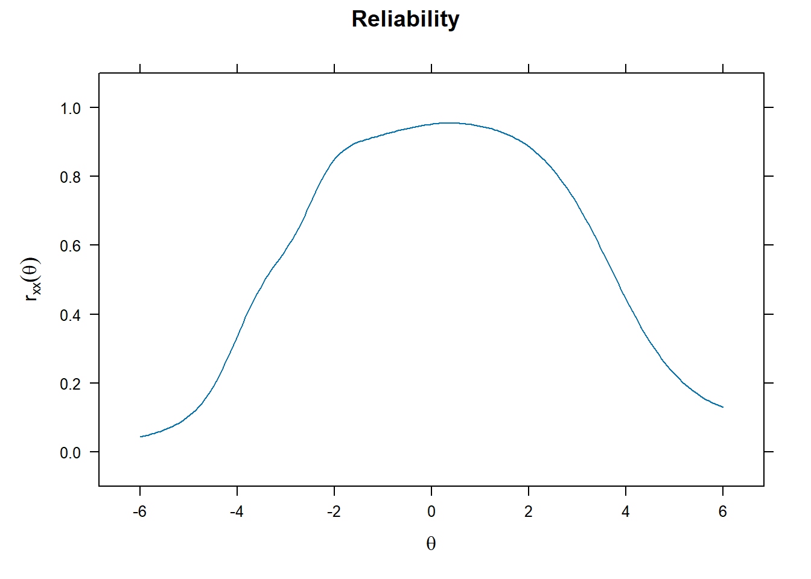
Erro padrão de medida em função do escore
plot(fit, type = 'SE')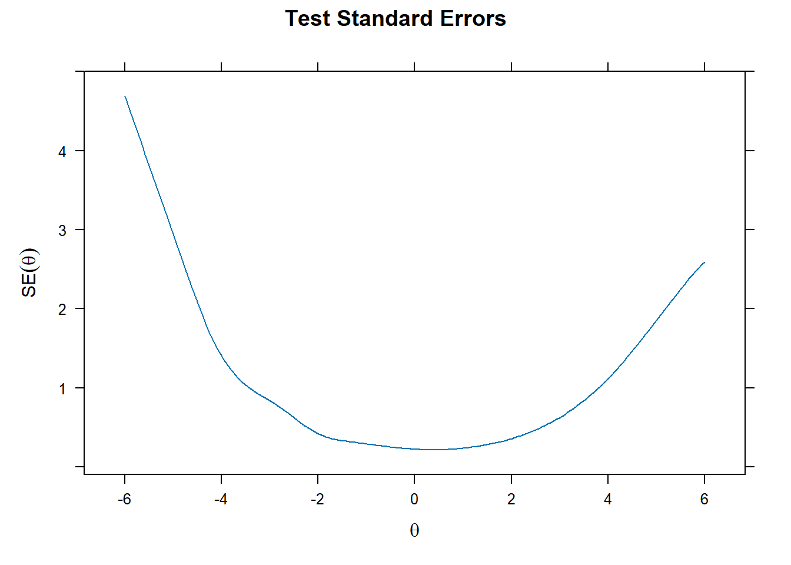
Informação do teste e erro padrão
plot(fit, type = 'infoSE')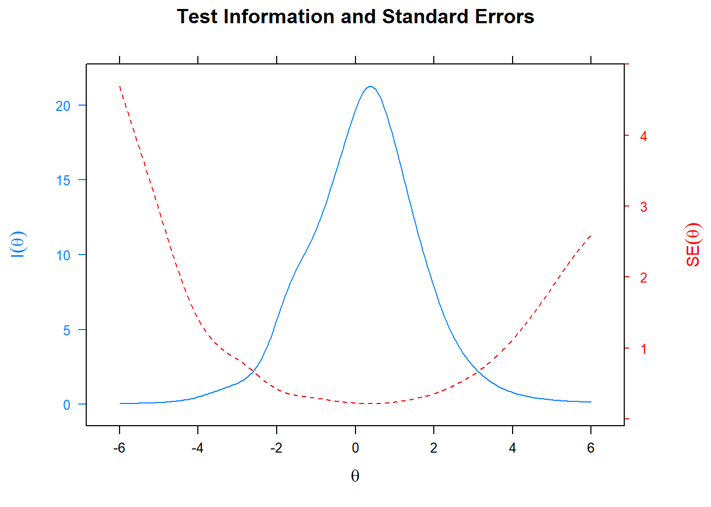
Curva de informação de cada item
plot(fit, type = 'infotrace')
Curva característica de cada item
plot(fit, type = 'trace')
4.3 Calibração sem priori
A título de curiosidade, vamos ver o que acontece se não utilizarmos priori para a calibração. Primeiro, vamos deixar só a priori do c.
tab.pars <- mirt(data = banco.misto, model = 1, itemtype = c(rep('3PL', 50), rep('graded', 10)), TOL = 0.001, pars = 'values')
tab.pars[tab.pars$name == 'g', 'value'] <- .2
tab.pars[tab.pars$name == 'g', 'prior_1'] <- 5
tab.pars[tab.pars$name == 'g', 'prior_2'] <- 17
tab.pars[tab.pars$name == 'g', 'prior.type'] <- 'expbeta'
tab.pars[tab.pars$name == 'g', 'lbound'] <- 0
tab.pars[tab.pars$name == 'g', 'ubound'] <- 1
fit3 <- mirt(data = banco.misto, model = 1, itemtype = c(rep('3PL', 50), rep('graded', 10)), TOL = 0.001, pars = tab.pars)Veja o que acontece com os dois primeiros itens.
pars3 <- data.frame(coef(fit3, IRTpars = TRUE, simplify = TRUE)$items)
pars3 a b g u b1 b2
IME_2801 -0.6408626 -0.8388442039 0.1588435 1 NA NA
IME_6196 -1.1146907 -0.3569174954 0.1300366 1 NA NA
IME_6042 1.8475136 0.1277865327 0.3910306 1 NA NA
IME_2416 0.8063741 -1.5246831366 0.2062605 1 NA NA
IME_5228 2.0777202 -0.6331757348 0.1631316 1 NA NA
IME_2228 0.8983844 0.2163558815 0.2928282 1 NA NA
IME_2647 2.7641713 0.3771145739 0.1571023 1 NA NA
IME_1742 2.3150896 -0.7459356425 0.2146106 1 NA NA
IME_1437 2.8089303 0.1265081662 0.3865210 1 NA NA
IME_5369 1.9839058 1.4299211191 0.2898516 1 NA NA
IME_6881 1.1397135 -0.5656044701 0.2122853 1 NA NA
IME_6411 2.4496100 -1.7239918752 0.1995885 1 NA NA
IME_9707 0.4221602 -1.5537953822 0.2023962 1 NA NA
IME_2376 0.4753440 -1.0647935801 0.2005422 1 NA NA
IME_2405 2.1164563 -0.8586506856 0.2190977 1 NA NA
IME_3939 0.7254944 -0.7248737531 0.2060476 1 NA NA
IME_1554 0.5447535 0.5718762992 0.1950337 1 NA NA
IME_4568 0.9306295 -0.8759284299 0.2172169 1 NA NA
IME_2727 1.8665601 -0.2043827480 0.3192310 1 NA NA
IME_4274 2.9551941 -0.2794713404 0.1335132 1 NA NA
IME_3586 0.9589351 0.5069251151 0.1791272 1 NA NA
IME_6972 0.3280037 -2.4532505858 0.2003580 1 NA NA
IME_9082 1.7456857 -1.4745182053 0.2278394 1 NA NA
IME_9631 2.4636808 1.7495994171 0.3818041 1 NA NA
IME_6436 1.9325586 0.9200176179 0.4562214 1 NA NA
IME_5479 1.4322387 -0.8361023509 0.2353822 1 NA NA
IME_6958 2.5268023 -1.6593942200 0.2128165 1 NA NA
IME_2786 1.9737234 -3.1936584472 0.2010217 1 NA NA
IME_8580 0.7260021 0.3825100353 0.1958331 1 NA NA
IME_7417 1.1471126 0.1977736030 0.2146286 1 NA NA
IME_9843 2.8830161 0.2993285927 0.1969959 1 NA NA
IME_4882 2.0784952 0.1113358172 0.2183477 1 NA NA
IME_4071 0.8798210 -0.4001823720 0.2029145 1 NA NA
IME_4005 3.1889318 0.9660624883 0.3947791 1 NA NA
IME_9948 0.6183960 0.4183624567 0.1919715 1 NA NA
IME_7131 2.3989334 0.6795546466 0.1398816 1 NA NA
IME_9079 1.7085942 -0.0872743266 0.2053752 1 NA NA
IME_8825 0.4825136 0.0793572405 0.1991370 1 NA NA
IME_5113 2.3721390 0.2768679014 0.1476603 1 NA NA
IME_5104 0.3907670 -0.9111507588 0.2004592 1 NA NA
IME_8184 2.4905185 0.2256653094 0.3043280 1 NA NA
IME_2565 1.9070774 0.6999752375 0.4299898 1 NA NA
IME_6445 2.1489136 -1.4689323012 0.2124560 1 NA NA
IME_3341 1.4260999 -1.8309078907 0.1934728 1 NA NA
IME_8694 0.7260224 0.0007032249 0.2107911 1 NA NA
IME_1433 2.2587553 -0.5509290404 0.2790076 1 NA NA
IME_3127 2.8380145 -1.7334355834 0.1921525 1 NA NA
IME_8340 0.3578544 0.5487789352 0.1993967 1 NA NA
IME_9914 0.6260080 -1.3994862666 0.1996314 1 NA NA
IME_6379 1.2649534 0.7715822711 0.1688871 1 NA NA
IRC_7671 2.4153373 NA NA NA -0.721772415 -0.3675070
IRC_5373 1.7466297 NA NA NA 0.460697061 0.6754419
IRC_6255 1.7001540 NA NA NA 1.472449894 2.5083262
IRC_9192 1.6201692 NA NA NA 0.433882596 1.2420630
IRC_8276 2.3891628 NA NA NA 0.602171070 1.2874071
IRC_7024 1.2043347 NA NA NA -0.598125250 0.0131247
IRC_3451 0.5361498 NA NA NA 0.613376690 0.8338027
IRC_4181 1.7051349 NA NA NA -0.360659664 0.5161568
IRC_7970 1.5827442 NA NA NA -0.537591102 -0.1805604
IRC_2335 1.5342853 NA NA NA 0.002338742 0.2216203
b3
IME_2801 NA
IME_6196 NA
IME_6042 NA
IME_2416 NA
IME_5228 NA
IME_2228 NA
IME_2647 NA
IME_1742 NA
IME_1437 NA
IME_5369 NA
IME_6881 NA
IME_6411 NA
IME_9707 NA
IME_2376 NA
IME_2405 NA
IME_3939 NA
IME_1554 NA
IME_4568 NA
IME_2727 NA
IME_4274 NA
IME_3586 NA
IME_6972 NA
IME_9082 NA
IME_9631 NA
IME_6436 NA
IME_5479 NA
IME_6958 NA
IME_2786 NA
IME_8580 NA
IME_7417 NA
IME_9843 NA
IME_4882 NA
IME_4071 NA
IME_4005 NA
IME_9948 NA
IME_7131 NA
IME_9079 NA
IME_8825 NA
IME_5113 NA
IME_5104 NA
IME_8184 NA
IME_2565 NA
IME_6445 NA
IME_3341 NA
IME_8694 NA
IME_1433 NA
IME_3127 NA
IME_8340 NA
IME_9914 NA
IME_6379 NA
IRC_7671 0.5614592
IRC_5373 1.2448762
IRC_6255 2.6271082
IRC_9192 1.3656294
IRC_8276 1.3935231
IRC_7024 0.4316637
IRC_3451 1.4065592
IRC_4181 1.1375633
IRC_7970 0.6793831
IRC_2335 0.4457731Agora vamos calibrar sem priori estabelecida para os parâmetros a e c
fit4 <- mirt(data = banco.misto, model = 1, itemtype = c(rep('3PL', 50), rep('graded', 10)), TOL = 0.001)Veja novamente os dois primeiros itens.
pars4 <- data.frame(coef(fit4, IRTpars = TRUE, simplify = TRUE)$items)
pars4 a b g u b1 b2
IME_2801 -0.5331576 -0.182968186 0.006395557 1 NA NA
IME_6196 -0.9571352 -0.007539307 0.003191954 1 NA NA
IME_6042 2.2195405 0.319012980 0.450290563 1 NA NA
IME_2416 1.0730130 -0.475090912 0.487166479 1 NA NA
IME_5228 1.9041043 -0.719967234 0.077378410 1 NA NA
IME_2228 1.4935803 0.792990647 0.449572284 1 NA NA
IME_2647 2.7323698 0.401010028 0.146423755 1 NA NA
IME_1742 2.4116669 -0.650722627 0.248613218 1 NA NA
IME_1437 3.0541957 0.218525803 0.414495801 1 NA NA
IME_5369 2.1488493 1.461953960 0.299066102 1 NA NA
IME_6881 1.2800576 -0.287370887 0.300043460 1 NA NA
IME_6411 2.4263096 -1.671951835 0.236915403 1 NA NA
IME_9707 0.7391497 0.669173235 0.540093514 1 NA NA
IME_2376 0.4873612 -0.890117852 0.225574927 1 NA NA
IME_2405 2.2085715 -0.750056152 0.261770560 1 NA NA
IME_3939 0.8260024 -0.270377516 0.314134441 1 NA NA
IME_1554 0.4686356 0.068209074 0.084303655 1 NA NA
IME_4568 1.2892304 -0.093893181 0.442538259 1 NA NA
IME_2727 2.1679784 -0.012255491 0.386485915 1 NA NA
IME_4274 2.7202535 -0.304457369 0.079670950 1 NA NA
IME_3586 0.8727837 0.388056640 0.126035515 1 NA NA
IME_6972 0.3203723 -2.687980102 0.161747936 1 NA NA
IME_9082 2.3885173 -0.842752664 0.527282156 1 NA NA
IME_9631 2.9155036 1.766887769 0.392808163 1 NA NA
IME_6436 2.4013029 1.035292112 0.488974911 1 NA NA
IME_5479 1.6642321 -0.517409963 0.356867083 1 NA NA
IME_6958 2.9777337 -1.340503045 0.433984225 1 NA NA
IME_2786 2.0073830 -3.006325981 0.390986978 1 NA NA
IME_8580 0.7120101 0.366621132 0.181488046 1 NA NA
IME_7417 1.2398058 0.330866758 0.248716216 1 NA NA
IME_9843 2.9315269 0.339801138 0.197295813 1 NA NA
IME_4882 2.1653166 0.176542789 0.230809637 1 NA NA
IME_4071 0.9235171 -0.243848176 0.238477081 1 NA NA
IME_4005 3.5061764 1.019526368 0.407743556 1 NA NA
IME_9948 0.5536701 0.115943224 0.113342447 1 NA NA
IME_7131 2.2874613 0.685605473 0.120973689 1 NA NA
IME_9079 1.7544887 -0.022529312 0.216071343 1 NA NA
IME_8825 0.4603158 -0.075650450 0.163507929 1 NA NA
IME_5113 2.2573577 0.277617431 0.122695990 1 NA NA
IME_5104 0.3933913 -0.805005444 0.211241336 1 NA NA
IME_8184 2.6938399 0.307882717 0.327063119 1 NA NA
IME_2565 2.2660562 0.821629003 0.464290592 1 NA NA
IME_6445 2.3894174 -1.204833820 0.371973927 1 NA NA
IME_3341 1.3457450 -2.027458304 0.046255879 1 NA NA
IME_8694 0.9022409 0.472866714 0.323063689 1 NA NA
IME_1433 2.5030302 -0.396103913 0.342511604 1 NA NA
IME_3127 2.6169310 -1.841629979 0.066980242 1 NA NA
IME_8340 0.3279778 0.107793760 0.132941903 1 NA NA
IME_9914 0.6075145 -1.537572716 0.153971694 1 NA NA
IME_6379 1.1830472 0.736457023 0.138833918 1 NA NA
IRC_7671 2.4227138 NA NA NA -0.68171613 -0.3268769
IRC_5373 1.7597754 NA NA NA 0.49720276 0.7101927
IRC_6255 1.7198517 NA NA NA 1.49775947 2.5192684
IRC_9192 1.6349760 NA NA NA 0.47252598 1.2695620
IRC_8276 2.4244920 NA NA NA 0.63847257 1.3119611
IRC_7024 1.2055473 NA NA NA -0.56260340 0.0492829
IRC_3451 0.5358029 NA NA NA 0.64687108 0.8677217
IRC_4181 1.7128128 NA NA NA -0.32030857 0.5518951
IRC_7970 1.5879000 NA NA NA -0.49962012 -0.1430212
IRC_2335 1.5424783 NA NA NA 0.03942306 0.2575174
b3
IME_2801 NA
IME_6196 NA
IME_6042 NA
IME_2416 NA
IME_5228 NA
IME_2228 NA
IME_2647 NA
IME_1742 NA
IME_1437 NA
IME_5369 NA
IME_6881 NA
IME_6411 NA
IME_9707 NA
IME_2376 NA
IME_2405 NA
IME_3939 NA
IME_1554 NA
IME_4568 NA
IME_2727 NA
IME_4274 NA
IME_3586 NA
IME_6972 NA
IME_9082 NA
IME_9631 NA
IME_6436 NA
IME_5479 NA
IME_6958 NA
IME_2786 NA
IME_8580 NA
IME_7417 NA
IME_9843 NA
IME_4882 NA
IME_4071 NA
IME_4005 NA
IME_9948 NA
IME_7131 NA
IME_9079 NA
IME_8825 NA
IME_5113 NA
IME_5104 NA
IME_8184 NA
IME_2565 NA
IME_6445 NA
IME_3341 NA
IME_8694 NA
IME_1433 NA
IME_3127 NA
IME_8340 NA
IME_9914 NA
IME_6379 NA
IRC_7671 0.5974229
IRC_5373 1.2734340
IRC_6255 2.6363001
IRC_9192 1.3914577
IRC_8276 1.4162006
IRC_7024 0.4674857
IRC_3451 1.4404116
IRC_4181 1.1665017
IRC_7970 0.7135549
IRC_2335 0.4803832Para discussão: qual o impacto de usarmos priori na calibração?